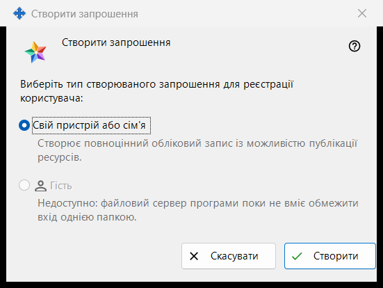
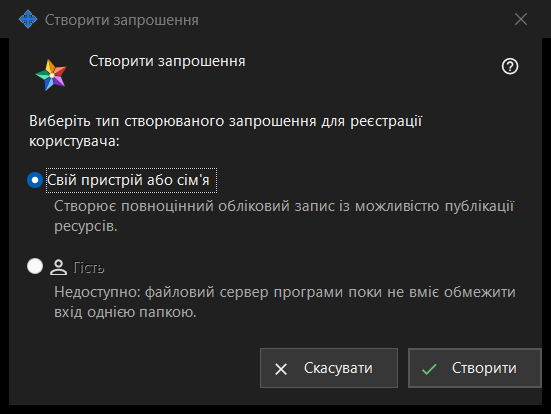

Створити запрошення
Призначення
У цьому невеликому вікні вибирається, який обліковий запис створить нове запрошення. Вікно відкривається кнопкою «Створити запрошення..» у групі «Запрошення» налаштувань сервера обміну; групу показано, коли менеджер зв'язався із сервером.


Порядок дій
- У налаштуваннях сервера обміну знайдіть групу «Запрошення» і натисніть «Створити запрошення..».
- Залиште вибраним «Свій пристрій або сім'я».
- Натисніть «Створити».
- Відкриється вікно «Запрошення створено» з кодом, який показується один раз: скопіюйте його там. «Скасувати» або Esc закривають вікно, нічого не створюючи.
Елементи вікна
Тип запрошення
Запитання «Виберіть тип створюваного запрошення для реєстрації користувача:» пропонує два перемикачі. «Свій пристрій або сім'я» вибрано за замовчуванням, під ним написано: «Створює повноцінний обліковий запис із можливістю публікації ресурсів.» Людина, яка скористається запрошенням, реєструє власний логін і пароль.
Створити
«Створити» просить у сервера одноразове запрошення. У разі успіху на сторінці налаштувань з'являється рядок «Запрошення успішно створено.» і відкривається вікно з кодом. Якщо сервер відмовив, причина виводиться на сторінці, а вікно з кодом не відкривається. У списку запрошення показано типом, часом створення, станом і хешем, але не кодом.
Відкликання запрошення
Щоб скасувати вже створене запрошення, виберіть його в списку й натисніть «Відкликати запрошення»; після підтвердження його код перестає діяти.
Скасування
«Скасувати» або Esc закривають вікно, нічого не створюючи.
Налаштування менеджера · Налаштування спільного доступу SFTP · Налаштування сервера обміну